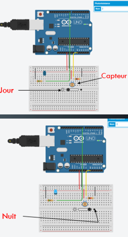
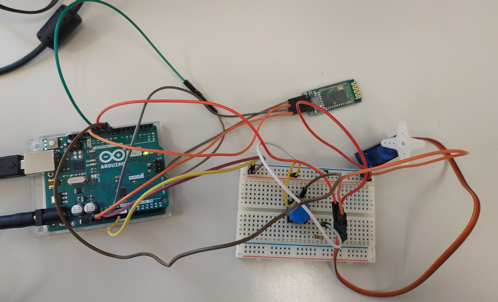

Pour utiliser le capteur LDR – PHOTORÉSISTANCE que j'ai placé sur le phare de mon vélo, j'ai utilisé un capteur, j'ai créé un code plus un montage à l'aide d'un Arduino Uno

Pour utiliser ce montage, j'ai du créer un code en C++. Il permet de dire au capteur d'allumer la lumière lorsque la luminosité est basse.
Le code en C++ est donc :
const int analogInPin = A0;
const int analogOutPin = 8;
>
int sensorValue = 0;
int outputValue = 0;
void setup() {
Serial.begin(9600);
pinMode(analogOutPin, OUTPUT);
pinMode(analogInPin, INPUT);
}
void loop() {
sensorValue = analogRead(analogInPin);
outputValue = map(sensorValue, 0, 1023, 0, 255);
outputValue = (outputValue - 255)*-1;
analogWrite(analogOutPin, outputValue);
Serial.print("sensor = " );
Serial.print(sensorValue);
Serial.print("\t output = ");
Serial.println(outputValue);
}
Second Projet
Présentation du Projet
Le second projet que je suis en train de réaliser est une application pour un distributeur automatique de nourriture pour animaux. Mon application consiste à pouvoir suivre à distance la quantité de nourriture que l'animal à dans sa gamelle, si l'animale n'a plus de nourriture dans sa gamelle, son maître peut en rajouter à distance avec une quantité de nourriture qu'il y a déjà dans la réserve du distributeur. Il y a aussi une fonctionnalité pour pouvoir suivre la santé de son animal à distance à l'aide d'un collier que l'animal portera; ce collier prélevera son pouls et sa position.

Ce montage, est composé d'un émetteur-récepteur Bluetooth (hc-06 HC 06 RF). Il va permettre de connété l'Arduino à l'application smartphone. Dans ce montage il y a aussi un Micro Servo (SG90 9G) relié à un bouton poussoir. L'orsque l'utilisateur appuira sur le bouton poussoire, la roue du Micro Servo tournera. Et grâce à l'émetteur-récepteur Bluetooth, l'utilisateur pourra contrôler cette fonctionnalité à distance.
Pour utiliser se montage, j'ai réalisé un code en C++ :